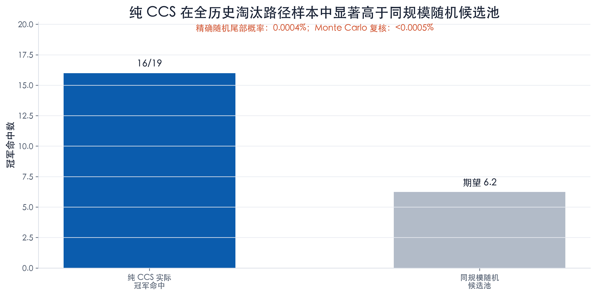
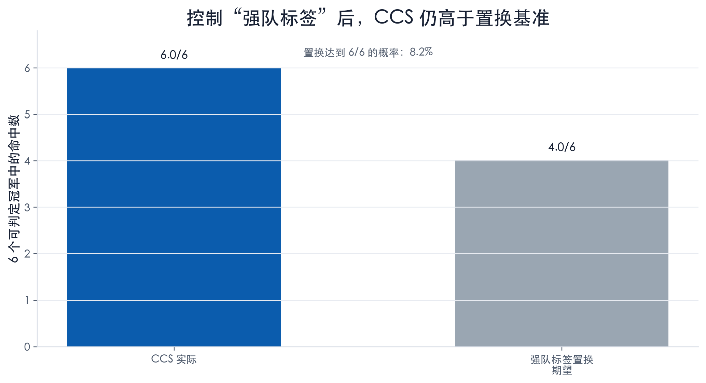
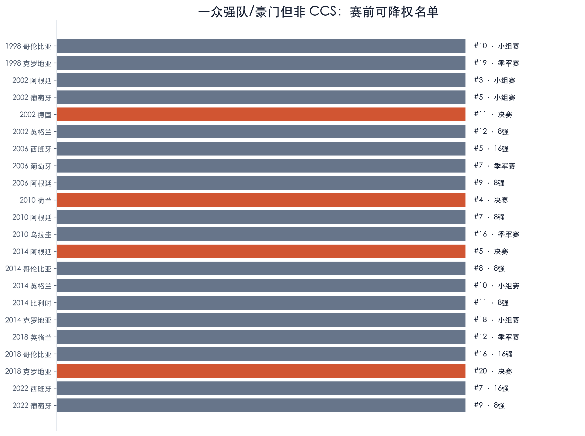
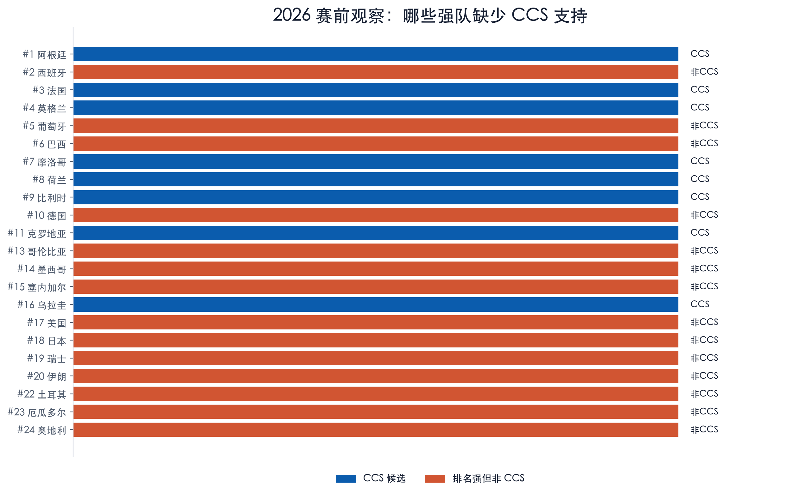

冠军链信号：一个赛前冠军候选过滤器
本报告同时保留两个口径：纯 CCS 作为宽口径冠军候选池；“前两届都参赛”作为更严格的赛前排除规则。
执行摘要
- 报告现在明确分成两个口径。 口径 A 是纯 CCS：不要求前两届都参赛，只看球队是否在前两届冠军链候选池里。口径 B 是更严格的“前两届都参赛”排除规则：若一支队参赛履历完整，但没有任何冠亚军路径接触，历史上没有下一届夺冠。
- 纯 CCS 是宽口径候选池结论。 在全历史淘汰路径样本里，纯 CCS 覆盖 16/19 个可判定冠军；同规模随机候选池期望命中 6.2 个冠军，达到该结果的概率是 0.0004%。
- 前两届参赛口径是更锋利的排除结论。 1938-2022 年间，177 个球队-届次满足“前两届都参赛”；其中 112 个有冠军/亚军路径接触，65 个没有。后者成为下一届冠军的次数是 0。
- 这会重新解释所谓历史漏点。 1978 阿根廷和 1998 法国不是反例，因为它们前两届没有都正常参加决赛圈。1982 意大利也不是反例，因为它前两届都参赛，且 1978 年第二阶段小组输给了当届亚军荷兰。
- 随机基准本质就是概率乘法，而且这是正确的第一道检验。 如果每届随机排除与 clean non-contact 池同样数量的球队，期望会误排 2.6 个冠军；精确算出来，随机排除却 0 次排到冠军的概率是 5.9%。
- Monte Carlo simulation 只是复核，不是黑箱。 20 万次随机重抽得到 5.9%，与精确概率接近。报告用精确值作 headline，把 simulation 作为可复现 sanity check。
- 最有体感的用法，是赛前热门队降权清单。 1998 年以来，一众排名高、名气大、今天读者也会认为有冠军叙事的强队，在开赛前并非 CCS。它们并不一定弱，甚至可能进决赛，但现代样本里没有最终夺冠。
- 机制上，它有强队效应，但比“强队”更窄。 它问的不是球队是否有名、排名是否高，而是它最近两届是否已经在世界杯周期里被冠军级或亚军级对手验证过。
1. 两个口径，两种用法
不要求球队前两届都参赛。只问下一届冠军是否出现在前两届任一冠军链候选池里，用来构建宽口径候选池。
只看前两届都参赛的球队。如果它仍然没有冠亚军路径接触，就进入严格排除池；历史冠军数为零。
两者回答的问题不一样。 纯 CCS 适合做“候选池”；前两届参赛规则适合做“排除/降权”。这样既不因为门槛过严丢掉法国 1998 这类无前史样本，也能保留最锋利的排除结论。
2. 口径 A：不考虑前两届都参赛的纯 CCS
纯 CCS 先回答宽口径问题。 不管一支队前两届是否都参加，只要它出现在前两届任一冠军链候选池里，就算 CCS 候选。在全历史淘汰路径样本中，这个口径覆盖 16/19 个可判定冠军。

现代标准赛制样本也支持这个方向。 1986-2022 年，纯 CCS 覆盖全部冠军口径 9/10 (90.0%)；如果剔除 1998 法国这个无前史例外，则为 9/9 (100.0%)。

3. 口径 B：前两届都参赛的严格排除规则
这条规则刻意很窄。 只有当一支球队前两届都参加了世界杯决赛圈，并且这两届所有淘汰赛/争冠阶段经历中，既没有自己夺冠，也没有输给当届冠军或亚军，才进入排除池。1974、1978、1982 的第二阶段小组被视为争冠阶段，因为这些年份不是现代 16 强淘汰赛结构。
“前两届都参赛”这个门槛确实苛刻，所以要在同一个门槛内对比。 1938-2022 的目标样本共有 460 个球队-届次；其中只有 177 个满足“前两届都参赛”。在这 177 个里面，112 个有过冠军/亚军路径接触，65 个没有。
65 个不是 65 支唯一球队，而是 65 个球队-届次。 它是严格参赛门槛之后的“干净无接触”一侧，对照组是同样满足前两届参赛条件、但已经有冠亚军路径接触的 112 个球队-届次。更细地拆，严格意义上“前两届输给当届冠军/亚军”的是 99 个；“前两届自己当过冠军”的是 31 个；两者重叠 18 个，所以合并后是 112 个。

看似的例外，在这个定义下会消失。 1978 阿根廷没有参加 1970 决赛圈；1998 法国没有参加 1990 和 1994 决赛圈；1982 意大利虽然前两届都参赛，但 1978 年第二阶段小组输给了最终亚军荷兰。
| 年份 | 冠军 | 前两届窗口 | 状态 | 证据 |
|---|---|---|---|---|
| 1978 | 阿根廷 | 1970;1974 | 前两届未都参加，不适用排除命题 | 1970 未进决赛圈；因此不适用排除命题。 |
| 1982 | 意大利 | 1974;1978 | 前两届都参加，且有冠军/亚军路径接触 | 1978 第二阶段小组输给最终亚军荷兰。 |
| 1998 | 法国 | 1990;1994 | 前两届未都参加，不适用排除命题 | 1990 和 1994 均未进决赛圈；因此不适用排除命题。 |
| 2022 | 阿根廷 | 2014;2018 | 前两届都参加，且有冠军/亚军路径接触 | 2014 决赛输给冠军德国；2018 16强输给冠军法国。 |
4. 两套 simulation：宽口径命中与严格口径排除
两套基准的思想一致：每届保留同样规模，然后随机化标签。 对纯 CCS 来说，检验的是“同规模随机候选池能否命中至少同样多冠军”；对严格口径来说，检验的是“同规模随机排除池能否一次都不排掉冠军”。
纯 CCS 随机基准是命中率检验。 全历史淘汰路径样本中，同规模随机候选池期望命中 6.2 个冠军；达到 16/19 的精确概率是 0.0004%，Monte Carlo 概率是 <0.0005%。
严格排除随机基准是误伤检验。 脚本做 20 万次同规模随机重抽；模拟得到 0 次误排冠军的概率为 5.9%，精确概率为 5.9%。

更强的控制，是检验 CCS 是否只是“强队标签”。 这个 simulation 明确限制在 1998-2022，因为这一段有一致的赛前 FIFA 排名语境，也更适合人工定义“现代冠军叙事队”。我们保留 CCS 在“传统冠军叙事队”和普通队中的数量，再在两个组内随机置换 CCS 标签。剔除法国 1998 这个明确无前史例外后，CCS 实际命中 6/6 个可判定冠军；强队标签置换的期望为 4.0/6，达到 6/6 的概率为 8.2%。

5. 赛前使用体验：哪些强队/豪门应被 CCS 降权
这是最容易让读者理解的方法使用场景。 开赛前，一支球队可以排名很高、历史声望很强、舆论很热，但仍然缺少最近两届的冠军链连接。主图从“FIFA Top 20 且非 CCS”的审计池里人工策展，重点保留今天读者也会自然认为与冠军叙事相关的强队：阿根廷、德国、英格兰、西班牙、葡萄牙、荷兰、比利时、哥伦比亚、克罗地亚、乌拉圭。

| 年份 | 球队 | 代码 | 赛前排名 | 最终成绩 | 排名日期 |
|---|---|---|---|---|---|
| 1998 | 哥伦比亚 | COL | #10 | 小组赛 | 1998-05-20 |
| 1998 | 克罗地亚 | HRV | #19 | 季军赛 | 1998-05-20 |
| 2002 | 阿根廷 | ARG | #3 | 小组赛 | 2002-05-15 |
| 2002 | 葡萄牙 | PRT | #5 | 小组赛 | 2002-05-15 |
| 2002 | 德国 | DEU | #11 | 决赛 | 2002-05-15 |
| 2002 | 英格兰 | ENG | #12 | 8强 | 2002-05-15 |
| 2006 | 西班牙 | ESP | #5 | 16强 | 2006-05-17 |
| 2006 | 葡萄牙 | PRT | #7 | 季军赛 | 2006-05-17 |
| 2006 | 阿根廷 | ARG | #9 | 8强 | 2006-05-17 |
| 2010 | 荷兰 | NLD | #4 | 决赛 | 2010-05-26 |
| 2010 | 阿根廷 | ARG | #7 | 8强 | 2010-05-26 |
| 2010 | 乌拉圭 | URY | #16 | 季军赛 | 2010-05-26 |
| 2014 | 阿根廷 | ARG | #5 | 决赛 | 2014-06-05 |
| 2014 | 哥伦比亚 | COL | #8 | 8强 | 2014-06-05 |
| 2014 | 英格兰 | ENG | #10 | 小组赛 | 2014-06-05 |
| 2014 | 比利时 | BEL | #11 | 8强 | 2014-06-05 |
| 2014 | 克罗地亚 | HRV | #18 | 小组赛 | 2014-06-05 |
| 2018 | 英格兰 | ENG | #12 | 季军赛 | 2018-06-07 |
| 2018 | 哥伦比亚 | COL | #16 | 16强 | 2018-06-07 |
| 2018 | 克罗地亚 | HRV | #20 | 决赛 | 2018-06-07 |
| 2022 | 西班牙 | ESP | #7 | 16强 | 2022-10-06 |
| 2022 | 葡萄牙 | PRT | #9 | 8强 | 2022-10-06 |
这个信号有用，但不是绝对排除。 非 CCS 强队可以走很远：2002 德国、2010 荷兰、2014 阿根廷都进入决赛。更准确的结论是：现代样本里，最终冠军几乎总来自 CCS 一侧。
6. 2026 应用：区分排名强与冠军链强
2026 是实时应用场景，不是回测结果。 本报告将排名快照冻结在 FIFA 2026 年 6 月 11 日官方排名，并使用 FIFA 2026 赛季接口中的入围队名单。最直接的赛前结论是：西班牙、葡萄牙、巴西、德国、哥伦比亚，都是排名强、声望强，但开赛前非 CCS 的豪强。
| 排名 | 球队 | 代码 | FIFA积分 | 降权理由 |
|---|---|---|---|---|
| #2 | 西班牙 | ESP | 1874.71 | 排名/声望强，但 2018/2022 无 CCS 来源 |
| #5 | 葡萄牙 | POR | 1767.85 | 排名/声望强，但 2018/2022 无 CCS 来源 |
| #6 | 巴西 | BRA | 1765.86 | 排名/声望强，但 2018/2022 无 CCS 来源 |
| #10 | 德国 | GER | 1735.77 | 排名/声望强，但 2018/2022 无 CCS 来源 |
| #13 | 哥伦比亚 | COL | 1698.35 | 排名/声望强，但 2018/2022 无 CCS 来源 |
下方完整观察表保留头部排名上下文，避免把 2026 的降权判断藏在人工挑选名单里。

| 排名 | 球队 | 代码 | CCS状态 | CCS 来源届次 |
|---|---|---|---|---|
| #1 | 阿根廷 | ARG | CCS 候选 | 2018;2022 |
| #2 | 西班牙 | ESP | 非 CCS，需降权 | none |
| #3 | 法国 | FRA | CCS 候选 | 2018;2022 |
| #4 | 英格兰 | ENG | CCS 候选 | 2018;2022 |
| #5 | 葡萄牙 | POR | 非 CCS，需降权 | none |
| #6 | 巴西 | BRA | 非 CCS，需降权 | none |
| #7 | 摩洛哥 | MAR | CCS 候选 | 2022 |
| #8 | 荷兰 | NED | CCS 候选 | 2022 |
| #9 | 比利时 | BEL | CCS 候选 | 2018 |
| #10 | 德国 | GER | 非 CCS，需降权 | none |
| #11 | 克罗地亚 | CRO | CCS 候选 | 2018;2022 |
| #13 | 哥伦比亚 | COL | 非 CCS，需降权 | none |
| #14 | 墨西哥 | MEX | 非 CCS，需降权 | none |
| #15 | 塞内加尔 | SEN | 非 CCS，需降权 | none |
| #16 | 乌拉圭 | URU | CCS 候选 | 2018 |
7. 为什么会这样：强队重要，但路径也重要
首先要承认，CCS 确实部分捕捉了强队效应。 冠军、亚军，以及被冠亚军淘汰的球队，本来就往往是强队。因此 CCS 与 FIFA 排名、赔率、历史声望存在天然重叠。
但 CCS 并不等同于“经常入围”或“排名很高”。 它要求球队在最近两届与冠军路径发生过具体关系：自己夺冠，或被最终冠亚军淘汰。一个队可以排名高、经常参赛、甚至进过 8 强，但如果没有触碰冠军路径，仍然可能是非 CCS。
更合理的机制解释是“锦标赛周期验证”。 最近两届与冠军链发生联系，意味着球队已经在世界杯淘汰赛强度下被冠军级对手验证过。这不是因果证明，而是一个紧凑的历史状态变量；它对冠军列尤其有解释力。
建议下一步
- 把 CCS 作为第一层冠军过滤器。 先用 CCS 构建冠军候选池；非 CCS 球队若要重新纳入，需要赔率、Elo、阵容或签表给出额外强证据。
- 补强正式模型基准。 下一版应与 Elo、赔率隐含概率、FIFA 排名和组合模型比较，检验 CCS 的增量价值。
- 固定 2026 赛前版本，赛后再评估。 不应随着赛果移动口径；应冻结赛前 CCS/排名表，等比赛结束后统一复盘。
待回答问题
- 控制 Elo 或赔率后，CCS 是否仍有预测增量？
- 回看 1 届、2 届还是 3 届最优？是否存在过拟合？
- 主办国、阵容周期突变、无前史样本，是否应建立单独 override 规则？
限制与假设
- 主结论使用的是球队-届次，不是唯一国家队；同一国家在多个周期满足条件，会被计为多个样本点。
- 1950 年保留在目标年份审计中，因为这条规则检验的是“下一届冠军在前两届是否有路径接触”；目标届本身不一定需要现代淘汰赛结构。
- 1974、1978、1982 的第二阶段小组视为争冠阶段，因为这些年份采用混合赛制，不是现代淘汰赛签表。
- 随机基准是同规模随机排除的精确概率计算；Monte Carlo simulation 只是复核这个乘法，不是黑箱模型。
- 强队标签置换 simulation 仍是 1998-2022 的现代控制实验，不是全历史 simulation，因为它依赖一致的现代排名语境和人工冠军叙事标签。
- FIFA 排名只是轻量公开审计变量；赔率与 Elo 是下一步更强基准。
- 2026 观察清单不使用 2026 赛果；排名快照冻结在 2026 年 6 月 11 日。